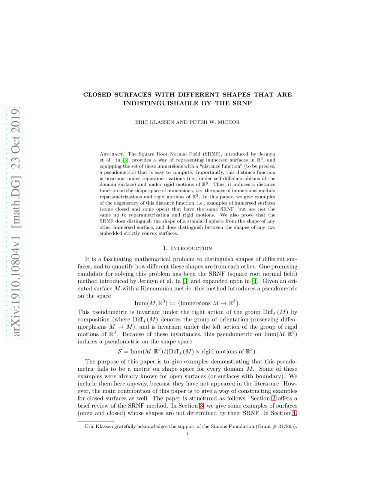

Are Pre-trained Language Models Aware of Phrases? Simple but Strong Baselines for Grammar Induction
ICLR 2020
Taeuk Kim, Jihun Choi, Daniel Edmiston, Sang-goo Lee
One-Line Summary
A foundational study on unsupervised grammar induction from pre-trained language models

Figure 1. Are Pre-trained Language Models Aware of Phrases? The paper investigates grammar induction capabilities of pre-trained LMs through simple but effective probing baselines.
Key Points
Proposes an unsupervised learning methodology for automatically inducing grammatical structures from unlabeled text
A key early work demonstrating the potential of neural network-based grammar induction